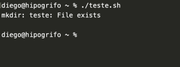
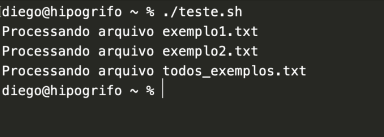

◉ Shell script: um guia básico
Shell script (sh) é uma linguagem de script usada em ambiente de linha de comando. Ela permite automatizar comandos de terminal
em sistemas baseados em Unix, como Linux e MacOS.
➤ Primeiros passos
Scripts são arquivos de texto que devem ser salvos com a extensão “.sh“. Por exemplo:
meu_script_shell.sh
Para executá-lo, o sistema deve ter a permissão de execução. Para isso, acesse o terminal, acesse o diretório em que o script se encontra
(use o comando cd) e rode o comando:
chmod +x meu_script_shell.sh
Para executar o script, no terminal, digite:
./meu_script_shell.sh
Podemos ainda executar o programa, chamando no terminal:
sh meu_script_shell.sh
➤ Comandos básicos em Shell Script
Agora, vamos criar um script básico que apenas exibe uma mensagem na tela. Crie um novo arquivo chamado teste.sh. Agora adicione as
seguintes linhas de código:
Ao executá-lo, veremos:
O script foi executado com ./teste.sh. Note que essa mensagem foi apagada da tela pelo comando de terminal “clear”.
➤ Criando variáveis em Shell Script
Podemos criar uma variável apenas inserindo um nome e atribuindo um valor com o operador =. Note que não podemos ter espaços entre
o nome da variável, o operador = e o valor atribuído. Veja:
Observe o resultado:
Comando executado no terminal. Neste caso, executamos um script chamado teste.sh
Note que para chamar as variáveis, precisamos declarar um cifrão $ antes de seu nome. Entretanto, esse cifrão não é necessário na hora de declará-la.
➤ Recebendo argumentos
Podemos receber argumentos enviados na chamada do programa usando as variáveis $1, $2, $3, … $9:
Neste exemplo, três parâmetros foram passados na chamada do programa.
➤ Estruturas condicionais
Estruturas condicionais podem ser aplicadas usando as estruturas if, elif e else. Veja a sintaxe:
Condições são aplicadas entre colchetes [ ]. Após cada condição, devemos adicionar ; then. Além disso, ao final precisamos adicionar o comando fi.
Note que para avaliarmos uma condição, precisamos primeiro conhecer os operadores relacionais, lógicos ou aritméticos.
➤ Operadores relacionais
Para comparar valores, precisamos utilizar os operadores relacionais. São eles:
Operadores comparativos em Shell Script.
Observe um exemplo com o operador -gt (greater than/maior que):
Veja que será exibido:
Note que poderíamos, fazer isso usando uma única estrutura condicional, usando elif:
Podemos ainda adicionar uma condição final, caso nenhuma outra condição seja verdadeira:
Neste caso, x é igual a y.
➤ Operadores lógicos
Já os osperadores lógicos permitem realizar múltiplas comparações. Eles podem ser:

Observe um exemplo:
➤ Operadores aritméticos
Operadores aritméticos permitem realizar operações matemáticas em Shell Script. Eles podem ser:
Observe como podemos fazer uma simples soma:
➤ Estruturas de repetição
Há duas principais estruturas de repetição: for e while.
Observe um exemplo usando o comando for:
Veja como podemos usar for para pegar todos os argumentos enviados na chamada do script:
Três chamadas distintas do script. Observe os argumentos impressos.
Observe como podemos usar o comando while para criar um menu de seleção:

➤ Automatizando comandos com Shell Script
Podemos usar qualquer comando de terminal dentro de um arquivo .sh. Por isso, podemos utilizar esse tipo
de script para automatizar tarefas administrativas ou até mesmo execução múltipla de scripts.
➤ Lendo todos os arquivos de um diretório
Podemos ler todos os arquivos de um diretório usando o comando ls. Veja:
Este comando irá listar todo o conteúdo do diretório atual.
Agora, vamos fazer algo mais avançado. Vamos concatenar vários comandos em sequência.
Acima, estamos criando uma pasta chamada teste com o comando mkdir, depois entramos nessa pasta e escrevemos a palavra teste
que será salva em um arquivo chamado exemplo.txt. Por fim, executamos o comando ls para ver se o arquivo realmente foi criado.
Note que ao executar o código, você verá apenas isto:

De fato, o arquivo desejado foi criado. Podemos perceber isso, executando novamente o código (o sistema retornará um erro, dizendo
que a pasta já existe).

➤ Lendo vários arquivos de texto usando shell script
Agora, vamos criar vários arquivos de texto em um diretório e lê-los usando shell script:
Note que o operador > joga o resultado impresso na tela para um arquivo.
Conseguimos detectar os arquivos, mas como podemos fazer para lê-los? Basta usar o comando cat no lugar de echo.

Podemos ainda gravá-lo em um único arquivo, usando o operador >>, que joga o resultado da execução para um arquivo (modo incremental).
No exemplo a seguir, vamos ler todos os arquivos com cat e gravá-los em um outro arquivo chamado “todos_exemplos.txt”:
➤ Automatizando a execução de scripts Python
Com tudo que aprendemos neste artigo, podemos por exemplo, automatizar a execução de múltiplos scripts Python ou de um mesmo
script que deve ser executado com diferentes parâmetros.
Por exemplo, digamos que você deseja realizar várias análises com arquivos no formato txt. Você poderia fazer isso com .sh,
mas digamos que um script Python foi feito por um colega seu, e você deseja usar esse código (afinal, você não precisa
“reinventar a roda”). O script que seu colega fez é este:
O código Python acima é bem simples. Ele apenas recebe um argumento com o nome de um arquivo de entrada e faz o processamento dele
(neste caso, não há processamento real, apenas uma mensagem na tela de que vamos fazer isso).
Como podemos automatizar a leitura de muitos arquivos “.txt”?
Podemos fazer isso com um shell script.
Aqui, lemos todos os arquivos de texto no diretório atual. A seguir, usamos o comando for para ler cada um deles e executar o script
Python passando cada arquivo como parâmetro. Veja o resultado:

➤ Executando comandos em background
Agora, digamos que os scripts Python que você deseja automatizar sejam bastante pesados. No exemplo acima, a execução será sequencial,
logo um dependerá que outro tenha terminado para que possa começar sua execução.
Você pode executar múltiplos comandos em background usando o comando nohup e o operador &. Veja:
Neste caso, o resultado da execução será gravado no arquivo nohup.out. Além disso, se houver erros na execução dos scripts,
eles serão gravados no arquivo nohup.err.
Observe que as mensagens que seriam exibidas estão no arquivo nohup.out: